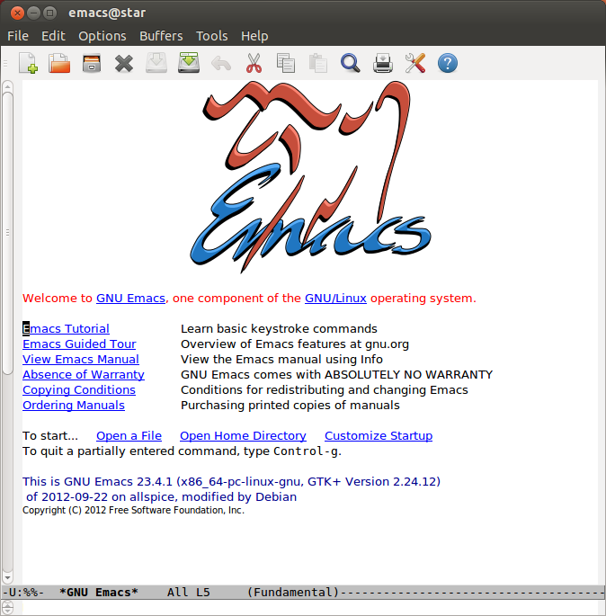
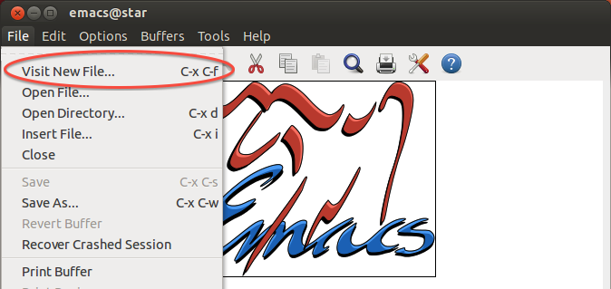
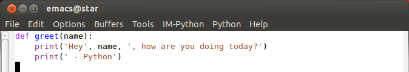

Emacs
认识 Emacs！
Emacs 是一个开源文本编辑器，被描述为"永恒且无限强大"。尽管 Emacs 创建于 1976 年（！），但它仍然是周围最流行的文本编辑器之一，主要是因为它很容易自定义！你可以让你的 Emacs 看起来和行为完全符合你的要求。鉴于它的流行性和可扩展性，如果你在另一个文本编辑器中看到想要窃取模仿的酷功能，Emacs 社区中的某个人可能已经为你完成了繁重的工作。
在 Emacs 中入门相当容易，尽管成为专业人士需要更多的工作。今天，我们只会向你介绍基础知识。在本指南结束时，你将能够打开 Emacs，创建一个名为 greet.py 的新文件，编写一个 greet 函数，并从终端运行它。
在你的电脑上安装 Emacs
- Windows：滚动到Emacs 网站底部并下载名为"emacs-24.3-bin-i386.zip"的文件。解压缩文件，你应该能够立即运行它。
- MacOS：好消息！Emacs 内置——只需在终端中输入
emacs。它相当朴素，所以有些人创建了一个更好的版本，在这里。点击巨大的下载按钮并按照弹出的说明操作。之后，你的应用程序文件夹中应该有 Emacs。如果你遇到问题，YouTube 上有一个更详细的演练，在这里。 - Ubuntu：在 Ubuntu 上安装 Emacs 最简单的方法是在终端中输入
sudo apt-get install emacs。
示例：greet.py
让我们首先使用你在实验 0中学到的 UNIX 命令创建并导航到一个名为 example 的目录：
mkdir ~/example
cd ~/example让我们尝试从命令行打开 Emacs。
emacs &你需要在 emacs 之后添加一个与号（&），这样你的终端仍然会有响应（作为练习，尝试省略 & 并按 Ctrl-c 来重新获得对终端的控制）。应该会打开一个像这样的窗口：

打开文件
要创建一个新文件，你有两个选项。
选项 1：使用键盘快捷键
C-x C-f。即：- 按住
Control（Ctrl）的同时，按x键。 - 释放
x键。 - 在仍然按住
Control的同时，按f键。
底部区域会出现一个提示。这个区域称为迷你缓冲区。输入
greet.py并按回车键。- 按住
选项 2：转到
文件菜单并点击访问新文件...
在迷你缓冲区中输入
greet.py并按回车键。
Emacs 窗口应该变成一个空白页面——你正在查看新创建的 greet.py 文件！将来，每当你想打开 Emacs 来编辑文件时，你可以在终端中输入 emacs greet.py &。如果你要编辑的文件还不存在，Emacs 会为你创建它。如果你已经打开了 Emacs，你可以只使用相同的 C-x C-f 快捷键。
编辑文件
现在，让我们编写一个简单的程序来根据你的名字问候你。如果你还不理解这个程序，请不要担心！我们将在接下来的几周内更深入地学习这些部分中的每一个的含义。
def greet(name):
print('Hey', name, ', how are you doing today?')
print(' - Python')Emacs 现在应该看起来像这样：

你会注意到某些单词的颜色不同，比如 def 和 print。Emacs 会查看文件名末尾的 .py，知道你想编写 Python，所以它会为你高亮显示特殊单词。语法高亮使程序更容易阅读！
保存文件
要保存你的程序，请使用键盘快捷键 C-x C-s 或导航到 文件 菜单并点击 保存。如果 Emacs 在迷你缓冲区中告诉你"Wrote /some/directories/greet.py"，你就知道它起作用了。
现在退出 Emacs，可以使用快捷键 C-x C-c 或在菜单中找到 文件 -> 退出。
运行 Python
让我们实际让 Python 做一些工作！确保你在包含我们的 greet.py 文件的 example 目录中。然后，在终端中输入这个。
python3 -i greet.py此命令执行以下操作：
python3是启动 Python 的命令-i是一个标志，告诉 Python 在交互模式下启动，这允许你从终端输入 Python 命令greet.py是我们想要加载的 Python 文件的名称
三个右尖括号（>>>）意味着你在 Python 解释器内部。现在，你可以让 Python 问候你：
greet('Brian')Python 然后会打印出
Hey Brian, how are you doing today?
- Python当然，你可能想让 Python 问候你而不是我。所以如果你的名字是 John，你还应该输入：
greet('John')突然之间，Python 知道如何问候你了！
Hey John, how are you doing today?
- Python恭喜，你已经编辑了你的第一个文件！随着课程的进展，编辑文件并运行它的过程会感觉更自然。要退出 Python 解释器，你可以在解释器中输入 exit() 或 quit()，或者按 C-d。
到目前为止你学到的一切足以让你完成 61A。不过，要充分利用 Emacs，你应该更熟练地使用 Emacs 的键盘快捷键。
Emacs 中的键盘快捷键
如果你有机会观看专业人士使用 Emacs，你会注意到她从不使用鼠标——她所做的一切都是通过快捷键完成的。Emacs 有各种各样的快捷键，可以帮助你做几乎任何事情。
你可能还记得上面的 C-x 意味着：按住 Control 的同时按 x 键。类似地，C-s 意味着：按住 Control 的同时按 s。 together，快捷键 C-x C-s 意味着做 C-x，然后 C-s。
The Meta 键
某些快捷键涉及 Meta 键，比如复制高亮文本区域的快捷键：M-w。现在大多数键盘都没有实际的 Meta 键，所以我们改用 Alt 键。（如果你在 Mac 上，请使用 Cmd。）要执行复制命令，请按住 Alt 并按 w。
M-x
最常见的 Meta 键快捷键之一是 M-x。如果你按 M-x，迷你缓冲区会提示你输入命令名称。尝试 M-x doctor 或 M-x snake！
有用的快捷键
你可能已经注意到，Emacs 的快捷键与你习惯的快捷键有很大不同。你会发现 Emacs 快捷键在编程世界中实际上相当常见。例如，尝试在终端中输入 python3 -i greet.py，但不要按回车键。M-b 做什么？它在 Emacs 中做同样的事情，即向后移动一个单词！也试试 M-f。
如果你想启用 C-c 和 C-v 等用于复制和粘贴的功能，你可以通过在 选项 菜单中找到它来打开 CUA 键。不过，我建议尝试 Emacs 的方式！
| 快捷键 | 描述 |
|---|---|
C-x C-s |
保存文件 |
C-x C-f |
打开文件（或创建新文件） |
C-/ |
撤销 |
C-w |
剪切高亮文本区域 |
C-y |
粘贴文本 |
M-w |
复制高亮文本区域 |
C-g |
取消命令 |
C-x C-c |
退出 emacs |
Emacs 帮助
Emacs 有大量信息丰富的"帮助"命令。你可以获得有关任何命令或键盘快捷键的更多信息。最好的部分是 Emacs 是自文档化的——不需要打开其他东西来获取帮助，因为它会显示在 Emacs 内部！
C-h t将启动 Emacs 教程。非常推荐完成此教程，因为它将帮助你更熟练地使用各种移动键盘快捷键。不过它有点长，所以你可能无法一次完成。C-h f会提示你输入函数名称并返回其文档字符串。C-h k会提示你输入键盘快捷键并返回其文档字符串。
还不信服？
Emacs...当冰盖融化、城市淹没时，当人类在火焰和僵尸中毁灭自己时，当蟑螂最终实现感知，接管并开始自己使用计算机时——它将在那里，到那时，它的各种 Ctrl-Meta 键和弦不仅对典型的节肢动物来说似乎令人满意地符合人体工程学，而且也是宇宙由某个六条腿、多关节的上帝进行智能设计的直接证据。 -- Kieran Healy
你自己的 Emacs 传奇即将展开！Emacs 的梦想和冒险世界等待着！我们走吧！ -- Samuel Oak
{kind=link}
{kind=link}